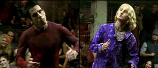
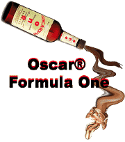

| Zoolander(SE)/ B, A |
| Paramount/2001/103/ANA 2.35 |
Could you call it inspired stupidity?
Zoolander certainly raises vapidity up to a new standard flying the
underwear colors of Derek Zoolander, international cover boy and male model of
the year three years running.
The inspiration for Zoolander is a skit developed by
Stiller and screenwriter Sather for the 1996 VH1/Vogue Fashion
Awards. There were myriad directions to take off from the Zoolander
character platform, but it seems like the writers were confident enough in
the inherent zaniness of Derek Zoolander to short-change the script.
Mockumentary elements get Zoolander moving while
a draft of Austin Powers and other derivative touches set its
course, but the success or failure of Zoolander clearly stands on
the slight frame of the title character. Derek Zoolander is a marvelous specimen for the wildest
spoofing. The visual jokes come fast and furiously with throwaway details
lost in the sometimes frenetic pacing of the montage work.
 |
|
The Walk-Off. ©Paramount
|
The vacuous world of Derek Zoolander is falling
apart. Rival male model Hansel is challenging his position as the best the
modeling world has to offer. A Time Magazine cover story holds him up to
ridicule. And his long time agent Ballstein is about to sell him out.
Behind the scenes, trendy fashion design icon Mugatu picks Zoolander
as the perfect specimen to brainwash for a dire act.
Ben Stiller plays Zoolander with inspired ditziness. Stiller's delivery is
consistently funny and he keeps in character through some of the most
difficult madness. Some malapropisms
broke me up into fits of laughter. Derek spits they out with confidence
"A eugoogolizer, one who speaks at funerals." There are times when the character seems to move out
of
his natural arc of intelligence, but they are minor. Christine Taylor has
the window dressing role of reporter Matilda Jeffries and manages to
maintain a cool comic comfort level reacting to Zoolander with just enough sense of bafflement.
Owen Wilson is a great choice for Hansel. He's more straight man to
Stiller, but Wilson's unusual screen presence adds its own special touch
of humor. Stiller's Dad, veteran comic Jerry Stiller, has a lot of fun
playing Maury Ballstein and Milla Jovovich takes to the dark locks and
heavy make-up of villainous Katinka with a delicious element of
pleasure.
There are strident aspects to Zoolander. Trendy
fashion designer Mugatu is played by Will Ferrell at one pitch, loud.
Whether the unfortunate obnoxious depiction of Mugatu is a function of
script or performance or some measure of both, I don't know. What's clear
is that the character is not funny. And the plot tears apart as quickly as a garment
hastily stitched together for a last minute runway change. What's so funny
about assassinating the Prime Minister of Malaysia because of his
opposition to child labor? You got me, Pal.
The screenplay by Stiller, Drake Sather , and
John Hamburg is driven by its well-written, clever, cool dialogue that keeps
Zoolander prancing down
the runway in fashionable style. But, again, the script is less than it could be.
It's okay to have a silly plot, but not if it doesn't
manufacture any fresh laughs; that's left to Zoolander and
company. The use of split-screen for the classic
"Walk-Off" provides runaway laughs. The music numbers are delightfully silly with costume
designs and production details adding to the playfulness. The several montage sequences are very well done.
Stiller does a fine job sharing the director and
star chairs. Mostly crisp pacing is delivered with a non-stop barrage of
firecracker jokes. The scene at Hansel's seems like it lasts forever, lost in Hansel's
retreat, undermining the superb pace of the movie and drags it down a
peg. Stiller peppers the Zoolander stew with lots of
entertaining cameo roles.
Watching Zoolander made me think that maybe I
can't turn left. Zoolander has a lot of broad winning performances
and never fails to produce a good time.
Zoolander is a hunk of a DVD. The transfer
exhibits beautifully balanced shadow detail. Overall depth in dark
scenes is extraordinary. Full bandwidth resolution delivers every precious
detail of Zoolander's wardrobe. Black level is simply incredible. The smallest
details are revealed in the lushest dark backgrounds or fabrics. Color
saturation is nothing short of miraculous with meticulous delineation of
color space. Amazing night cityscapes; glossy, beautiful, great punch. Zoolander
is a vitally alive transfer. I have never seen more stable rendering of
cobblestone streets. Great Dolby Digital 5:1 surround with an excellent
bass beat delivered free of flab. Nice overall balance between music and
action.
The special edition includes audio commentary from Ben Stiller and
writers Drake Sather and John Hamburg. It's a relaxed commentary with a
good balance of observations from all the participants. It's pretty
straight forward and a serious commentary. Other features includes five
deleted scenes, five extended scenes, with or without commentary, and
outtakes. There are some promotional television spots, photo galleries and
an alternate end title sequence. Too bad they did not use it: It's very
funny, but no doubt made it harder to read the credits.
|
|
|
|

Selections from the Feature
Archive include articles on Akira Kurosawa, Blonde Bimbos, Frank Darabont, Steven Culp, John Herzfeld or Vietnam: The Hollywood Pariah, and many
more....

The Academy of Motion Picture Arts Sciences and has a soft spot reserved
for peers taking on the battle of the bottle. Click on the bottle to learn
more about the magic of Oscar® Formula One.

The Movie Poster
Archive includes extensive poster images from the films of stars like
Susan Hayward, Kirk Douglas, Katharine Hepburn and many more. Our
featured star is Danny Kaye.

The Adventures of Baron Munchausen/A,A-

Director Terry Gilliam's richly detailed interpretation of the
outlandishly imagined and fabricated exploits of the legendary
eighteenth-century German adventurer and storyteller.


Mystery writer Fred Hunter digs into classic films on DVD. Check out his
insightful reviews at The Classics on DVD.
Imaging Science Foundation
The Imaging Science Foundation promotes proper standards in
home theater viewing. ISF trained technicians offer monitor calibration
services to consumers. The difference in a properly calibrated
monitor can be astounding. Click on the image to find an ISF member near
you.

DVD links, information about Web specials, news, Site reviews.

The National Film Preservation Foundation (NFPF) is the
nonprofit organization created by the U.S. Congress to save America's film
heritage.
 Have you visited
Home Theater
Talk lately? One of the friendliest places on the Net for Home
Theater and DVD discussion, you can get help for installation problems or
simply share your opinions with other Vidiots. Have you visited
Home Theater
Talk lately? One of the friendliest places on the Net for Home
Theater and DVD discussion, you can get help for installation problems or
simply share your opinions with other Vidiots.

ISF Monitor
Calibrations in the Tristate New York area. Lots of hardware
info and frequent hardware peaks from video expert Kevin Miller. They may
be judgmental, but that's the point, isn't it. Lots of DVD reviews plus
news and more.
|